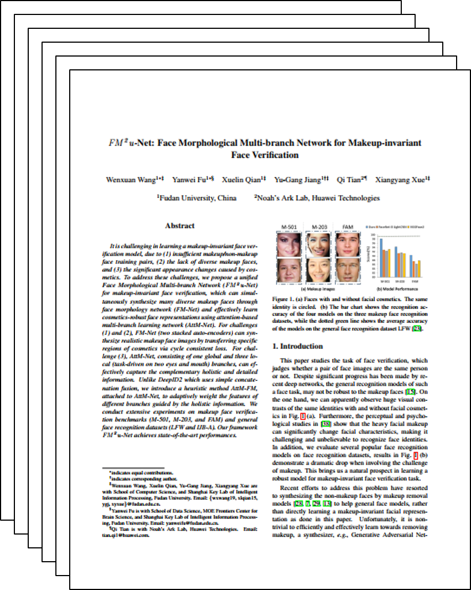

FM2u-Net Framework
|
Fudan University Noah's Ark Lab, Huawei Technologies
|
|
It is challenging in learning a makeup-invariant face verification model, due to
(1) insufficient makeup/non-makeup face training pairs, (2) the lack of diverse makeup faces, and (3) the
significant appearance changes caused by cosmetics. To address these challenges, we propose a unified
Face Morphological Multi-branch Network (FM2u-Net) for makeup-invariant face verification, which can simultaneously
synthesize many diverse makeup faces through face morphology network (FM-Net) and effectively learn
cosmetics-robust face representations using attention-based multi-branch learning network (AttM-Net). For challenges
(1) and (2), FM-Net (two stacked auto-encoders) can synthesize realistic makeup face images by transferring specific
regions of cosmetics via cycle consistent loss. For challenge (3), AttM-Net, consisting of one global and three local
(task-driven on two eyes and mouth) branches, can effectively capture the complementary holistic and detailed
information. Unlike DeepID2 which uses simple concatenation fusion, we introduce a heuristic method AttM-FM,
attached to AttM-Net, to adaptively weight the features of different branches guided by the holistic information. We
conduct extensive experiments on makeup face verification benchmarks (M-501, M-203, and FAM) and general
face recognition datasets (LFW and IJB-A). Our framework FM2u-Net achieves state-of-the-art performances.
|
|
Face Morphological Multi-branch Network (FM2u-Net) for makeup-invariant
face verification, can simultaneously synthesize many diverse makeup faces through face morphology
network (FM-Net) and effectively learn cosmetics-robust face representations using attention-based
multi-branch learning network (AttM-Net).
|
|
|
|
FM2u-Net Framework
|
|
FM-Net is stacked by two weight-sharing auto-encoders, to synthesize high-quality
and abundant makeup faces by transferring the key cosmetics local patches (two eyes and mouth) between two similar faces.
AttM-Net learns cosmetics-robust identity features on local patches, and fuses them under the guidance of attention mechanism,
which can adaptively weight different parts (global and local) for each particular face.
|
|
To facilitate this study, we assembled a new makeup face verfication database of 1102 face images
that is 551 pairs of individuals. Each pair has one makeup and one non-makeup face images of the same individual.
All face images are collected from the Internet with text information about makeup or non-makeup. So the
labels of makeup and non-makeup, and the facial identities are collected together with the face images from
the Internet. This dataset have the facial images of large areas of acne, glasses occlusion, head posture changes and
so on. Some face examples from our database are shown in below.
|
|
Extended Makeup Face Dataset
|
|
The file name in the folder is xxx_m or xxx_n, where xxx indicates the xxxth person,
"m" indicates the image with makeup, and "n" indicates the image without makeup.
This dataset is for non-commercial reseach purposes (such as academic research) only.
[Dataset Google Drive]
[Dataset Baidu Drive](password:n2zw)
|
|  |
FM2u-Net: Face Morphological Multi-branch Network for Makeup-invariant Face Verification.
Wenxuan Wang*, Yanwei Fu*, Xuelin Qian, Yu-Gang Jiang, Qi Tian, Xiangyang Xue [Paper] [Bibtex] [Dataset Google Drive] [Dataset Baidu Drive](password:n2zw) |
|
Generated Images
|
Acknowledgements
The website is modified from this template.
|